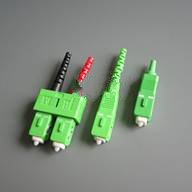

SC/UPC SC/APC
Item |
Single mode |
Multi mode |
Insertion loss |
PC＜0.3dB APC＜0.2dB |
PC＜0.3dB |
Return loss |
PC＞45dB APC＞60dB |
PC＞25dB |
Insert-pull test |
1000 times ＜0.3dB |
|
Operating temperature |
-40℃ ~ +75℃ |
|
Ceramic ferrule spec |
125.5um concentricity deviations:＜1um |
127um concentricity deviations:＜3um |
Suitable fiber |
PC/APC(9/125um) |
PC(50/125um,62.5/125um) |
a.Supply multi coded colour
b.Supply SM,MM,Simplex & Duplex connectors.
c.Supply all set connectors. And accessories(SKD)
d.Supply 3.0mm ,2.0mm ,0.9mm boot.